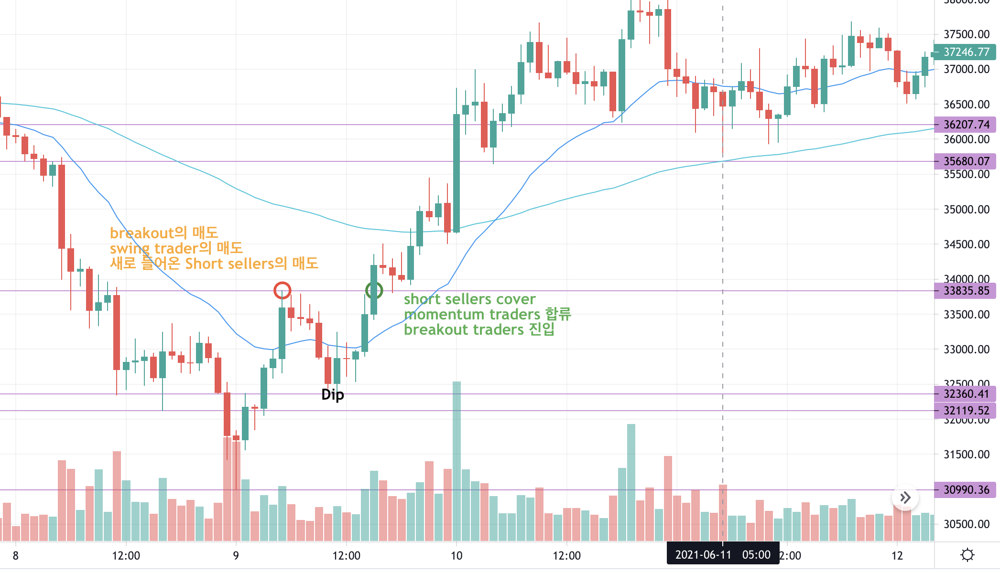

Chart Patterns are all formed in hindsight
- 주식차트로 보는 트레이더의 심리게임 ① swing traders
- 21. 6. 9 
: 주로 하루이상 포지션으로 강한 매수세가 예상되는 시점에 들어가 다음 고점을 이루는 가격변동에서 수익을 얻으려는 사람들.
② breakout traders
: 가장 최근 있었던 고점 구간에서 주가가 저항선을 돌파("breakout")
③ short sellers
: "불과 며칠 전 ~까지 떨어졌던 주식이 2x 올랐으니 지금이 Short타이밍이네"
보통 dip buyers들이 사는 지점에서 매수 or momentum traders이 들어오는 시점에서 (강제)매
④ dip buyers : 한 번 고점을 찍었던 주식이 하락해서 지지선을 급전할 때 생기는 저점 구간에서 사는 사람
⑤ Momentum Traders
: breakout 이후 주가 상승/하락의 강세에 올라타서 ("모멘텀"을 타면서) 수익을 얻는 사람들